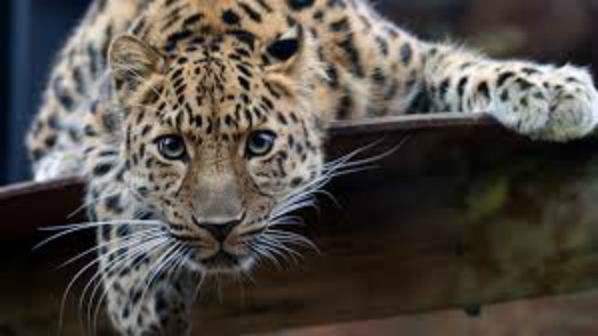

|
 |
El leopardo de Amur es una especie perteneciente al leopardo que se caracteriza por ser el más raro de sus parientes. Sin embargo, en la actualidad se encuentra en estado crítico y por ello forma parte de la lista roja de animales en peligro de extinción del UICN.